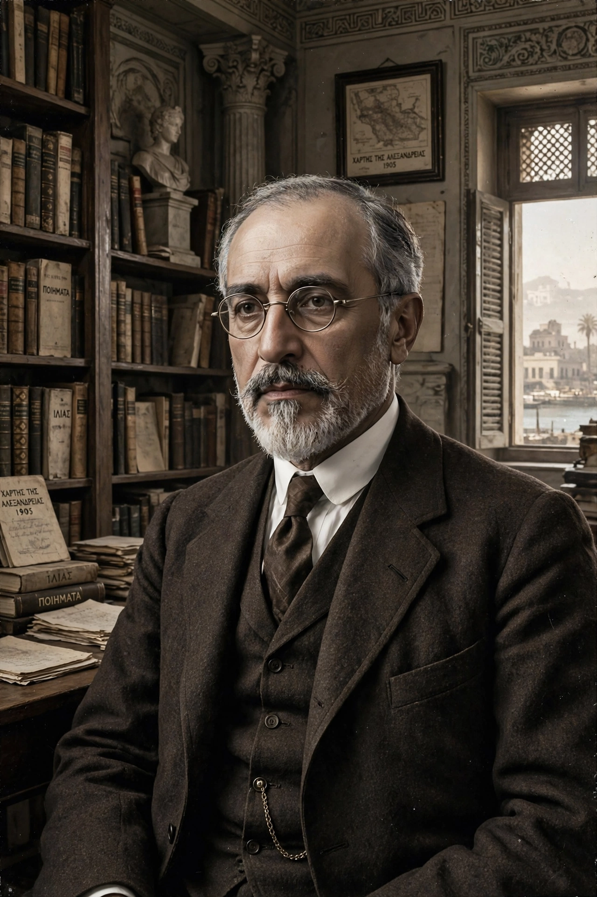

| Born | 29 April 1863, Alexandria, Egypt |
|---|---|
| Died | 29 April 1933 (aged 70), Alexandria, Egypt |
| Occupation | Poet, journalist, public servant |
| Language | Greek |
| Notable poems | "Ithaca" (1911); "Waiting for the Barbarians" (1904); "The God Abandons Antony" (1911); "Alexandrian Kings" (1912) |
| Employer | Egyptian Ministry of Public Works (Irrigation Office) |
Constantine P. Cavafy (29 April 1863 – 29 April 1933), also known as Konstantinos Petrou Kavafis, was a Greek poet, journalist, and public servant from Alexandria. He is regarded as one of the greatest and most influential figures in modern Greek poetry, and in Western poetry as a whole; his importance was recognised only late in life and largely after his death.

Cavafy spent most of his life in Alexandria, Egypt.
Born to Greek parents in Alexandria, Cavafy spent part of his childhood in Liverpool and Constantinople after his father's death. Returning to Alexandria, he worked for some thirty years as a clerk in the Egyptian government's Irrigation Office, publishing poetry only sparingly — printing poems privately and circulating them to friends. He died on his seventieth birthday in 1933.
Cavafy's canon consists of 154 recognised poems, blending historical subjects — especially the Hellenistic world, late antiquity, and Byzantium — with intimate, frankly homoerotic poems of memory and desire. In "Ithaca" (1911), the journey to Odysseus's island becomes a meditation on the value of the voyage over the destination. "Waiting for the Barbarians" (1904) portrays a city paralysed by expectation of an invasion that never comes. His deliberately prosaic, ironic diction and mixture of purist and demotic Greek were revolutionary for Greek poetry.
E. M. Forster, who knew Cavafy in Alexandria during the First World War, introduced him to English readers. Translations by Rae Dalven, Edmund Keeley and Phillip Sherrard, and Daniel Mendelsohn spread his fame; W. H. Auden championed him, and his poems have been set to music and quoted worldwide. He is now routinely ranked alongside Kazantzakis as a founder of modern Greek letters.